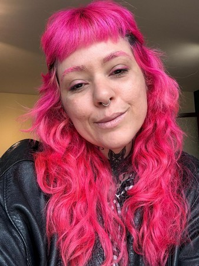

Bruna Gabriela Moraes Rodrigues
Social Media & Digital Marketing
Fashion, Content and Photography
Profile
Social media and digital marketing professional with over seven years of hands-on experience in content creation, product photography, brand communication and e-commerce for a vintage fashion brand. Currently a freelance Marketing Planning Assistant at Lebuse Marketing Agency, where I plan strategy and content for clients and am the agency's own social media (posts, video editing and thumbnail covers). I also run my own brand, Anarkitty, of ceramics and beaded accessories.
Work Experience
Marketing Planning Assistant (Freelance)
- Analysis of prospective clients' social media profiles and metrics (reach, engagement, growth).
- Preparation of briefings and brand strategies: target audience, positioning, tone of voice and content pillars.
- Monthly content planning: editorial calendar, post ideas, captions and Reels and Stories scripts.
- The agency's own social media: creating posts, video editing and thumbnail covers.
Social Media, E-commerce & Fashion Photography
- Independently managed the brand's Instagram and Facebook: content creation, posting calendar and direct customer contact.
- Photographed and produced editorial images of each piece for the catalogue, the website and social media.
- Built and maintained the website and online store, with SEO and Google Ads campaigns.
- Managed the catalogue and inventory across the online store, fairs and vintage fashion events, where I represented the brand in person.
- Sales and customer service across channels (website, social media, e-mail, WhatsApp and Enjoei), with order follow-up.
Creator and owner of the Anarkitty brand
- Built the brand from scratch, with its own visual identity (purple and black checkerboard, pink and red) and bilingual communication.
- Produce the Instagram content (behind-the-scenes reels, brand introduction, product photography), packaging and sales.
Retail and customer service
- Sales Associate & Cashier, Natura | Portugal | 2025 (6 months)
- Sales Assistant (part-time), Ale Hope | Porto | May 2025 - Oct 2025
- Barista & Cashier, Starbucks and Fava Tonka (Time Out Market) | Porto | 2024
- Sales Assistant, Humana Vintage | Porto | 2023